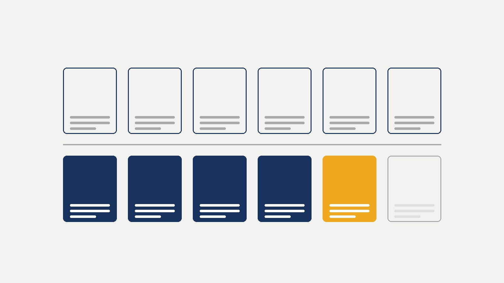

Itapema · Serviço
Itapema · ServiçoO feriado de segunda tira dois dias de aula da mesma semana em Itapema, e o Mirante do Encanto abre três horas mais cedo
O que abre e o que fecha na semana do feriado de Aparecida.
A quinta edição de 2026 do programa que leva serviços da Prefeitura para dentro do bairro é neste sábado, dia 17, das 9h às 16h, na EMEB Educar, na Rua 230, nº 415, na Meia Praia. Lemos as 17 notas que a Prefeitura de Itapema já publicou sobre o programa e montamos a lista das 12 edições de 2025 e 2026. A da Meia Praia, em 4 de outubro do ano passado, foi a maior de todas, com mais de 500 atendimentos. Em 7 de março deste ano o Morretes passou de mil e ficou com o recorde. Das cinco edições de 2026, só essa primeira teve total divulgado.
Em 30 segundos · Modo de Leitura, formato original Santa Informa
O Prefeitura Mais Perto volta à Meia Praia.
É no sábado, dia 17 de outubro.
O horário é das 9h às 16h.
O local é a EMEB Educar.
Fica na Rua 230, nº 415.
É a 5ª edição de 2026 do programa.
O atendimento é gratuito.
Tem Carteira de Identidade Nacional.
Tem CadÚnico, CRAS e CREAS.
Tem atendimento de saúde e vacinação.
Tem bem-estar animal e meio ambiente.
Tem esporte, pessoa idosa e atividade para criança.
Lemos as 17 notas da Prefeitura sobre o programa.
Montamos a lista de todas as edições.
São 12 edições em 2025 e 2026.
Em 2025 foram 6.
Morretes, Ilhota e Alto São Bento.
Sertão do Trombudo, Meia Praia e Tabuleiro.
Em 2026 também são 6.
Quatro já passaram e esta é a quinta.
A sexta está prevista para novembro.
Será no Morretes, na EMEB Bento Eloi Garcia.
A edição da Meia Praia de 2025 foi em 4 de outubro.
Ela passou de 500 atendimentos.
Foi a maior do programa até então.
Reuniu mais de 100 profissionais.
O recorde durou 154 dias.
Em 7 de março de 2026 veio o Morretes.
Ali passaram de mil atendimentos.
É o recorde que vale hoje.
Do 4 de outubro de 2025 ao dia 17 são 378 dias.
Das 5 edições de 2026, só a 1ª teve total divulgado.
A do Sertão do Trombudo saiu item por item.
Foram 190 identidades emitidas.
Mais 82 atendimentos de saúde.
Mais 36 odontológicos e 67 vacinas.
Dá 375 serviços, soma nossa dos quatro itens.
A Prefeitura não publicou o total dessa edição.
Nem o da Ilhota, nem o da Várzea.
No mesmo bairro, em 2025, foram 209 identidades.
Em 2026 foram 190.
São 19 a menos, ou 9,1%.
Um bairro de 2025 não está no roteiro de 2026.
É o Tabuleiro dos Oliveiras.
Ele fechou o calendário de 2025.
Teve mais de 350 atendimentos em 8 de novembro.
O Morretes, por sua vez, aparece duas vezes em 2026.
Poder PúblicoPublicada em Redação Santa Informa

O Prefeitura Mais Perto, que junta num sábado só os serviços de várias secretarias dentro de um bairro, volta à Meia Praia neste sábado, 17 de outubro. É das 9h às 16h, na EMEB Educar, na Rua 230, nº 415, e é de graça. A última vez que o programa esteve ali foi em 4 de outubro de 2025, e aquela edição passou de 500 atendimentos, a maior que o programa já tinha feito. Entre as duas passaram 378 dias, conta nossa. O recorde, porém, já não é da Meia Praia.
A Prefeitura lista Carteira de Identidade Nacional, atualização do CadÚnico, atendimento de saúde e vacinação, CRAS e CREAS, além de ações de bem-estar animal, meio ambiente, esporte, pessoa idosa e atividades para crianças. Em edições anteriores a senha da identidade foi distribuída das 9h às 14h, por ordem de chegada, e o aviso desta não repete esse detalhe.
Fomos ler as 17 notas que a Prefeitura publicou sobre o programa e montamos a lista. Em 2025 foram seis edições: Morretes, Ilhota, Alto São Bento, Sertão do Trombudo em 23 de agosto, Meia Praia em 4 de outubro e Tabuleiro dos Oliveiras em 8 de novembro, esta anunciada como a sexta e última do ano. Em 2026 também são seis: Morretes em 7 de março, Ilhota em 9 de maio, Sertão do Trombudo em 27 de junho, Várzea e Alto São Bento em 15 de agosto, a Meia Praia agora, e uma sexta prevista para novembro, na EMEB Bento Eloi Garcia, no Morretes.
O recorde mudou de dono em 7 de março. A edição do Morretes passou de mil atendimentos, quase o dobro da marca da Meia Praia, e a Prefeitura a chamou de maior mobilização já feita. A Meia Praia ficou 154 dias com o posto de maior edição, conta nossa.
Das cinco edições de 2026, só a primeira teve total de atendimentos divulgado. A do Sertão do Trombudo saiu item por item: 190 identidades, 82 atendimentos de medicina, enfermagem, nutrição e psicologia, 36 odontológicos e 67 vacinas. Somando os quatro dá 375 serviços, soma nossa, que não é o total da edição porque há outros setores sem número. As da Ilhota e da Várzea não trouxeram contagem nenhuma. Em 2025 foi diferente: as três últimas edições do ano saíram com o total somado.
Dá para comparar um dado do mesmo bairro nos dois anos. No Sertão do Trombudo, em 2025, foram 209 identidades emitidas. Em 2026, no mesmo lugar, foram 190. São 19 a menos, ou 9,1%, conta nossa. É o único item que as duas notas publicam do mesmo jeito.
O resumo de 30 segundos está no topo e a versão completa é o texto acima. Aqui ficam as três leituras da casa sobre o mesmo assunto.
Clara, a otimista
Doze edições em dois anos é constância, e constância em serviço público não é coisa pouca. O programa não sumiu depois da foto de lançamento: voltou, mudou de bairro, mudou de formato e cresceu. Sair de 500 atendimentos para mais de mil na mesma cidade, em pouco mais de um ano, quer dizer que a notícia correu de boca em boca e que o morador passou a confiar no sábado.
E tem o detalhe que faz diferença de verdade: é sábado. Quem trabalha a semana inteira não precisa pedir folga para tirar identidade, atualizar o CadÚnico ou levar a criança para vacinar. A Meia Praia é bairro grande, de gente que sai cedo e volta tarde, e receber a Prefeitura dentro da escola do bairro resolve num dia o que levaria três manhãs de fila. Quem puder chegar cedo garante a senha e sai com o problema resolvido.
Seu Prudêncio, o criterioso
Merece atenção o sumiço do número. Em 2025 as três últimas edições saíram com o total somado, o que permitia comparar bairro com bairro e ano com ano. Em 2026, de cinco edições, só a primeira trouxe o total. O que sobra é dado solto, como as 190 identidades do Sertão do Trombudo, útil mas insuficiente para medir o programa. Vale acompanhar se o balanço de sábado vem completo.
O intervalo entre as edições também pede olho. Em 2026 ficou entre 49 e 63 dias, o que é ritmo razoável para uma operação que mobiliza mais de cem servidores num sábado. Mas a sexta edição está anunciada para novembro sem data, e novembro é véspera de temporada, quando a máquina municipal fica apertada. Uma sugestão útil é publicar a data logo, porque quem depende de um documento precisa se programar.
Dito isso, o desenho do programa está correto e os resultados aparecem. Levar emissão de identidade, CadÚnico, vacina e orientação de tributo para dentro da escola do bairro, num sábado, é a forma mais barata de reduzir deslocamento e fila no Paço. Se for para apontar uma coisa que deu certo na administração, esta é uma delas, e a reclamação aqui é só de prestação de contas, não de execução.
Caco, o sarcástico
A Meia Praia bateu o recorde do programa em outubro do ano passado e ficou cento e cinquenta e quatro dias se achando. Veio o Morretes em março, passou de mil e acabou com a festa. Agora a Meia Praia volta, um ano e treze dias depois, com a missão de recuperar o posto num sábado só. Vai lá, bairro, você consegue.
Reclamação registrada: abri as cinco notas das edições de 2026 atrás do total de atendimentos e achei um. Um. Nas outras quatro, a Prefeitura conta que foi lindo, cita as secretarias, põe aspas do secretário e esquece o número. É o tipo de balanço que não balança nada.
Mas tá bom porque é de graça, é no bairro e é sábado. Tirar identidade sem faltar no serviço é das poucas coisas que ainda dão certo neste país. Se a conta não sair, pelo menos o documento sai.
Fontes: a data de 17 de outubro, o horário das 9h às 16h, o endereço da EMEB Educar na Rua 230 nº 415, a lista de serviços, a informação de que esta é a quinta edição de 2026, os quatro bairros já atendidos no ano e a sexta edição prevista para novembro na EMEB Bento Eloi Garcia estão na nota Prefeitura Mais Perto leva serviços gratuitos à Meia Praia em outubro, publicada pela Prefeitura de Itapema em 7 de outubro de 2026. Os mais de 500 atendimentos, os mais de 100 profissionais e a condição de maior edição do programa estão na nota Prefeitura Mais Perto realiza maior edição do programa na Meia Praia, de 4 de outubro de 2025. Os mais de mil atendimentos do Morretes e a expressão "maior mobilização já realizada pelo programa" estão em Prefeitura Mais Perto abre 2026 com recorde de atendimentos, de 9 de março de 2026. A lista dos seis bairros de 2025, os mais de 350 atendimentos do Tabuleiro e a informação de que aquela foi a última edição do ano estão em Prefeitura Mais Perto encerra calendário 2025 no Bairro Tabuleiro com mais de 350 atendimentos, de 8 de novembro de 2025, e a condição de sexta e última edição está em Programa "Prefeitura Mais Perto" chega ao Bairro Tabuleiro, de 4 de novembro de 2025. Os mais de 450 atendimentos e as 209 identidades do Sertão do Trombudo em 2025 estão em Prefeitura Mais Perto realiza mais de 450 atendimentos no Sertão do Trombudo, de 25 de agosto de 2025. As 190 identidades, os 82 atendimentos, os 36 odontológicos e as 67 vacinas de 2026 estão em Prefeitura Mais Perto aproxima serviços da comunidade no Sertão do Trombudo, de 29 de junho de 2026. A data da Ilhota e a senha das 9h às 14h estão em Bairro Ilhota recebe segunda edição do ano de 2026 do Prefeitura Mais Perto, de 5 de maio de 2026. A edição da Várzea está em Prefeitura Mais Perto leva serviços gratuitos ao Bairro Várzea e região, de 15 de agosto de 2026. Abrimos e lemos as 17 notas do programa publicadas no site da Prefeitura, em 11 de outubro. Os 378 dias, os 154 dias, os 375 serviços somados, a diferença de 19 identidades e os intervalos de 49 a 63 dias são contas nossas sobre as datas e os números dessas notas.
Itapema · ServiçoO que abre e o que fecha na semana do feriado de Aparecida.
 Itapema · Poder Público
Itapema · Poder PúblicoO cadastro das 90 casas do Campo Verde abriu na edição da Várzea, em agosto.
Outro serviço da Prefeitura com prazo de sábado.